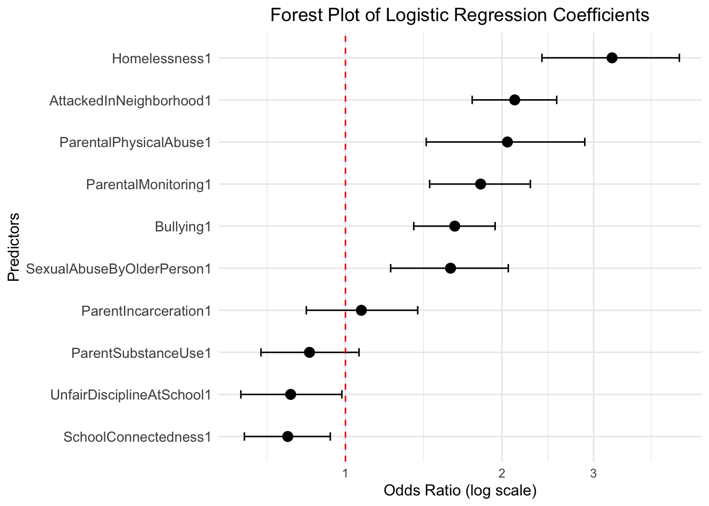

library(tidymodels)
library(tidyverse)
library(dissertationData)
library(here)
# Load and prepare the YRBS 2023 datasetLogistic Regression
Logistic regression is a statistical model that…
Model Overview
Logistic regression is used when the dependent variable is binary (0/1, Yes/No, True/False). The model estimates the probability of the dependent variable being 1 given the independent variables.
Implementation
Load the data
analysis_data <- readRDS(here("models", "data", "analysis_data.rds"))
analysis_train <- readRDS(here("models", "data", "analysis_train.rds"))
analysis_test <- readRDS(here("models", "data", "analysis_test.rds"))
analysis_folds <- readRDS(here("models", "data", "analysis_folds.rds"))Recipe
weapon_carry_recipe <-
recipe(formula = WeaponCarryingSchool ~ ., data = analysis_data) |>
step_impute_mode(all_nominal_predictors()) |>
step_impute_mean(all_numeric_predictors()) |>
step_zv(all_predictors()) |>
step_corr(all_numeric_predictors(), threshold = 0.7)
weapon_carry_recipe── Recipe ──────────────────────────────────────────────────────────────────────── Inputs Number of variables by roleoutcome: 1
predictor: 10── Operations • Mode imputation for: all_nominal_predictors()• Mean imputation for: all_numeric_predictors()• Zero variance filter on: all_predictors()• Correlation filter on: all_numeric_predictors()Bake
rec <- weapon_carry_recipe %>%
prep() %>%
bake(new_data = analysis_data) %>% glimpse()Rows: 19,595
Columns: 11
$ AttackedInNeighborhood <fct> 0, 0, 0, 0, 0, 1, 0, 0, 0, 0, 0, 0, 1, 0, 0, …
$ Bullying <fct> 0, 1, 0, 0, 0, 0, 0, 0, 0, 0, 0, 0, 0, 0, 0, …
$ SexualAbuseByOlderPerson <fct> 0, 0, 0, 1, 0, 0, 0, 0, 0, 0, 1, 0, 0, 0, 0, …
$ ParentalPhysicalAbuse <fct> 0, 0, 0, 0, 0, 1, 0, 0, 0, 0, 0, 0, 0, 0, 0, …
$ ParentSubstanceUse <fct> 1, 1, 1, 1, 1, 1, 1, 1, 1, 1, 0, 1, 1, 1, 1, …
$ ParentIncarceration <fct> 1, 1, 0, 1, 1, 1, 1, 1, 1, 1, 1, 1, 1, 1, 1, …
$ SchoolConnectedness <fct> 1, 0, 0, 1, 0, 0, 1, 1, 1, 1, 0, 1, 0, 1, 0, …
$ ParentalMonitoring <fct> 1, 0, 0, 0, 0, 0, 1, 1, 0, 0, 0, 0, 0, 1, 0, …
$ UnfairDisciplineAtSchool <fct> 1, 1, 1, 1, 1, 0, 1, 1, 1, 1, 1, 1, 1, 1, 1, …
$ Homelessness <fct> 0, 0, 0, 0, 0, 0, 0, 0, 0, 0, 0, 0, 0, 0, 0, …
$ WeaponCarryingSchool <fct> 0, 0, 0, 0, 0, 0, 0, 0, 0, 0, 0, 0, 0, 0, 0, …Model Specification
weapon_carry_spec <-
logistic_reg() %>%
set_mode("classification") %>%
set_engine("glm")
weapon_carry_specLogistic Regression Model Specification (classification)
Computational engine: glm Workflow
weapon_carry_workflow <- workflow() %>%
add_recipe(weapon_carry_recipe) %>%
add_model(weapon_carry_spec)
weapon_carry_workflow══ Workflow ════════════════════════════════════════════════════════════════════
Preprocessor: Recipe
Model: logistic_reg()
── Preprocessor ────────────────────────────────────────────────────────────────
4 Recipe Steps
• step_impute_mode()
• step_impute_mean()
• step_zv()
• step_corr()
── Model ───────────────────────────────────────────────────────────────────────
Logistic Regression Model Specification (classification)
Computational engine: glm mod_1 <-
fit(weapon_carry_workflow, data = analysis_train)
mod_1══ Workflow [trained] ══════════════════════════════════════════════════════════
Preprocessor: Recipe
Model: logistic_reg()
── Preprocessor ────────────────────────────────────────────────────────────────
4 Recipe Steps
• step_impute_mode()
• step_impute_mean()
• step_zv()
• step_corr()
── Model ───────────────────────────────────────────────────────────────────────
Call: stats::glm(formula = ..y ~ ., family = stats::binomial, data = data)
Coefficients:
(Intercept) AttackedInNeighborhood1
-3.29938 0.74950
Bullying1 SexualAbuseByOlderPerson1
0.48405 0.46540
ParentalPhysicalAbuse1 ParentSubstanceUse1
0.71713 -0.15917
ParentIncarceration1 SchoolConnectedness1
0.07048 -0.25542
ParentalMonitoring1 UnfairDisciplineAtSchool1
0.59860 -0.24268
Homelessness1
1.18053
Degrees of Freedom: 14695 Total (i.e. Null); 14685 Residual
Null Deviance: 5238
Residual Deviance: 4872 AIC: 4894tidy_model <-
mod_1 |>
tidy(exponentiate = TRUE,
conf.int = TRUE,
conf.level = .95) |>
mutate(p.value = scales::pvalue(p.value))
tidy_model# A tibble: 11 × 7
term estimate std.error statistic p.value conf.low conf.high
<chr> <dbl> <dbl> <dbl> <chr> <dbl> <dbl>
1 (Intercept) 0.0369 0.166 -19.9 <0.001 0.0266 0.0508
2 AttackedInNeighborho… 2.12 0.0954 7.85 <0.001 1.75 2.55
3 Bullying1 1.62 0.0919 5.27 <0.001 1.35 1.94
4 SexualAbuseByOlderPe… 1.59 0.133 3.51 <0.001 1.22 2.06
5 ParentalPhysicalAbus… 2.05 0.179 4.01 <0.001 1.43 2.89
6 ParentSubstanceUse1 0.853 0.111 -1.44 0.151 0.688 1.06
7 ParentIncarceration1 1.07 0.126 0.560 0.575 0.841 1.38
8 SchoolConnectedness1 0.775 0.0970 -2.63 0.008 0.639 0.935
9 ParentalMonitoring1 1.82 0.114 5.26 <0.001 1.45 2.27
10 UnfairDisciplineAtSc… 0.785 0.114 -2.13 0.033 0.629 0.984
11 Homelessness1 3.26 0.155 7.61 <0.001 2.39 4.39 Model Evaluation
weapon_pred <-
augment(mod_1, analysis_train) |>
select(WeaponCarryingSchool, .pred_class, .pred_1, .pred_0)
weapon_pred# A tibble: 14,696 × 4
WeaponCarryingSchool .pred_class .pred_1 .pred_0
<fct> <fct> <dbl> <dbl>
1 0 0 0.0360 0.964
2 0 0 0.0412 0.959
3 0 0 0.0241 0.976
4 0 0 0.0317 0.968
5 0 0 0.128 0.872
6 0 0 0.0360 0.964
7 0 0 0.0201 0.980
8 0 0 0.0201 0.980
9 0 0 0.0471 0.953
10 0 0 0.0531 0.947
# ℹ 14,686 more rowsroc_plot_training <-
weapon_pred |>
roc_curve(truth = WeaponCarryingSchool, .pred_1, event_level = "second") |>
autoplot()
roc_plot_training Visualizations
tidy_model %>%
ggplot(aes(x = estimate, y = reorder(term, estimate))) +
geom_point(size = 3) +
geom_errorbarh(aes(xmin = conf.low, xmax = conf.high), height = 0.2) +
geom_vline(xintercept = 1, linetype = "dashed", color = "red") +
scale_x_log10() +
labs(
x = "Odds Ratio (log scale)",
y = "Predictors",
title = "Forest Plot of Logistic Regression Coefficients"
) +
theme_minimal() +
theme(
axis.text.y = element_text(size = 10),
plot.title = element_text(hjust = 0.5)
)